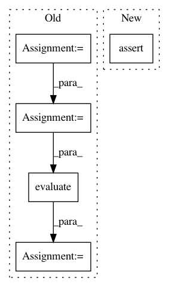

b5ae1c6bde39f5130c975992198f1f8ee5200f9a,tf_agents/policies/q_policy_test.py,QPolicyTest,testActionWithinBounds,#QPolicyTest#,102
Before Change
self._time_step_spec, bounded_action_spec, q_network=DummyNet())
observations = tf.constant([[1, 2], [3, 4]], dtype=tf.float32)
time_step = ts.restart(observations, batch_size=2)
action_step = policy.action(time_step)
self.assertEqual(action_step.action.shape.as_list(), [2, 1])
self.assertEqual(action_step.action.dtype, tf.int32)
// Initialize all variables
self.evaluate(tf.compat.v1.global_variables_initializer())
action = self.evaluate(action_step.action)
self.assertTrue(np.all(action <= -5) and np.all(action >= -6))
def testActionScalarSpec(self):
action_spec = tensor_spec.BoundedTensorSpec((), tf.int32, 0, 1)
After Change
minimum=-6,
maximum=-5)
with self.assertRaisesRegex(ValueError, "minimum of 0"):
q_policy.QPolicy(
self._time_step_spec, bounded_action_spec, q_network=DummyNet())
In pattern: SUPERPATTERN
Frequency: 3
Non-data size: 5
Instances
Project Name: tensorflow/agents
Commit Name: b5ae1c6bde39f5130c975992198f1f8ee5200f9a
Time: 2020-06-22
Author: ebrevdo@google.com
File Name: tf_agents/policies/q_policy_test.py
Class Name: QPolicyTest
Method Name: testActionWithinBounds
Project Name: tensorflow/agents
Commit Name: 71ec57f993d28f83bea04953cc51365942cb4894
Time: 2020-02-07
Author: summeryue@google.com
File Name: tf_agents/agents/behavioral_cloning/behavioral_cloning_agent_test.py
Class Name: BehavioralCloningAgentTest
Method Name: testTrainWithNN
Project Name: tensorflow/agents
Commit Name: 71ec57f993d28f83bea04953cc51365942cb4894
Time: 2020-02-07
Author: summeryue@google.com
File Name: tf_agents/agents/behavioral_cloning/behavioral_cloning_agent_test.py
Class Name: BehavioralCloningAgentTest
Method Name: testTrainWithRNN